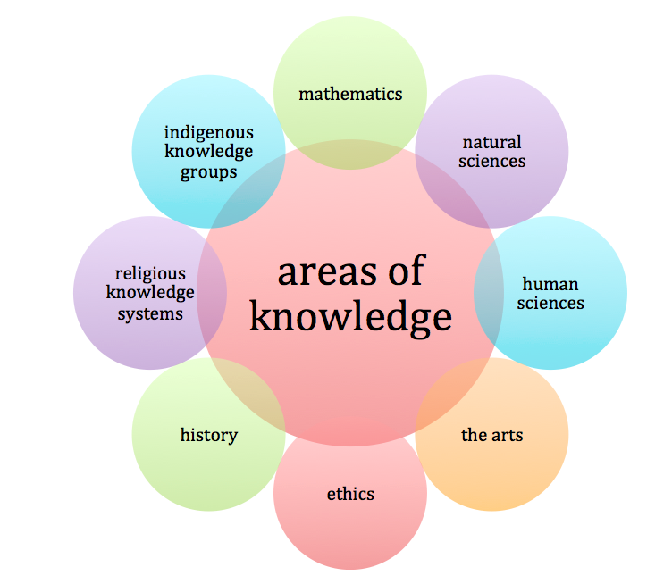

Вы находитесь на учебно-познавательном сайте inCase! Здесь люди обучаются азам Теории познания. Вы получите возможность усовершенствовать свои наывки в определнии проблемы в философских вопросах и ситуациях.
Сначала нужно сказать, что из названия "Теория познания" не следует, что это теория только о знании. Слово теория происходит от греческого слова "театр" (theory - theatre) - способ увидеть что-либо - поэтому Теория познания позволяет рассматривать познание с разных сторон, с разными взглядами.
Все области изучения Теории Познания опираются на два основных вопроса:
Конечно, полное представление о ТОК может появиться только полсе длительного изучения, но можно дать краткое представление о нем.
Кейс - это реальная или вымышленная, приближенная к реальности ситуация, постановка. Обучающиеся должны исследовать ситуацию, разобраться в сути проблемы, предложить возможные решения. Кейсы очень похожи на задачки в математике, разбирая которые обучающийся совершенствует свои навыки в той или иной теме. Кейсы в основном направлены на то, чтобы повысить навык потсановки проблемы к различным ситуациям из различных областей познания. Это может помочь в написании эссе по Теории познания, а также для определения проблем в более сложных философских вопросах.
ТОК разделяют на 8 основных частей, называемых Области познания (Areas of knwoledge). Очень важно иметь краткое представление о каждой из них, потому что будет понятно, какие методы и рассуждения использовать, решать кейс той или иной области.

Математика основывается на универсально принятых определениях и базовых предположениях. Несмотря на то, что (или даже, благодаря тому, что) математика основывается на строгихправилах построения рассуждений, математика является очень креативным предметом, требующим невероятного воображения. Многие естественные и общественные науки основываются на законы математики. Также есть связь между математикой и искусством, потому что в иссскустве очень важны условия гармонии, симметрии.
Полезные термины:
Естественные науки стремятся познать законы природы. Такое стремление означает, что ученые пытаются создать систему законов, которые существуют отдельно от человека. Методы естественных наук основаны на изучении окружающего мира. Все законы должны подтверждаться экспериментом или наблюдением. Эта область ТОК интересна обсуждением того, что является научным, а что не является.
Полезные термины:
Общественные науки изучают особенности бытия человека. Они изучают социальные, культурные и биологические составляющие существования человека. Основным различием между общественными и естественными науками является интерпретация слова "наука". Общественные Науки могут быть определены как наука, потому что в них используются научные методы проверки гипотез. Тем не менее в отличие от естественных наук в них сложнее сделать точный и быстрый вывод, так как остутствуют постоянные законы. Чаще обращаются к статистическим данным, что является ненадежным для постоения каких либо дальнейших выводов.
Полезные термины:
Термин искусство объединяет в себе все виды проявления культуры: визуальное искусство, театральное искусство, литература. Искусство изучает ощущение и реальность бытия человека и является неотъемлемой частью культуры. Искусство можно рассматривать как мостик между личным и общим способом познания, восприятия. Оно использует эмоцию для создания значимости для одного человека, но смысл требует ограниченной структуры подачи идеи для того, чтобы она обладала смыслом для всех: в каждом виде искусства используется своя логика для достижения смысла.
Полезные термины:
Одной из вещей, которая отличает нас от животных, является мораль. Основной проблемой этики в ТОК является вопрос: можем ли мы что-то назвать моральным. Многие люди спорят о том, можно ли поступать этично, придерживаясь определенных правил. Актуально обсуждение о том, в каких ситуациях можно нарушить правила морали.
Полезные термины:
Эта область изучает запечатленное прошлое. Оно поднимает вопрос о том, насколько уверенно мы можем обсуждать исторический факт и каким должен быть этот факт. Изучение истории помогает лучше разобраться в особенностях поведения человека.
Полезные термины:
Религиозные системы познания предлагают ответы к вопросам, связанным со смыслом и значением человеческой жизни. Эта область содержит в себе множество вер и систем: виды теизма, пантеизма и политеизма. Некоторые люди убуждены, что существует только одна настоящая религия, в то время как другие утверждают что религии друг на друга похожи и содержат похожие эелементы. Религия является хрупкой областью, обсуждения внутри которой должно проводиться с осторожностью, так как люди имеют свое личное убеждение на счет религии. Тем не менее для многих людей религия является главным инструментом восприятия мира, например идеи этики и религии очень близки друг к другу.
Полезные термины:
Эта область занимается тем, что изучает знания, принадлежащие только определенной культуре или сообществу. Обычно речь идет об определенных группах людей, таких как народ Нама в Южной Африке, народ Секоя в Эквадоре и Перу, Рюкюсцы в Японии. Главная особенность этой области заключается в том, что изучаемые системы познания являются неустойчивыми. Они динамичны из-за внутреннего и внешнего влияния. Например знания племени Маори является смесью традиционного знания и знания, полученного воздействием Европейских культур и постепенно ставшего неотменной частю их культуры.
Полезные термины:
Способы познания - это то, с помощью чего мы познаем мир вокруг нас. TOK определяет 8 различных способов познания, каждый из которого по разному получает знание из окружающего мира. Однако, как и области познания, они взаимосвязаны и влияют друг на друга:
У этого сайта есть почта для обратной связи! Если появляется вопрос или предложение, то всего можно написать сюда: inCasePhy@gmail.com . Также Вы можете присылать свои кейсы на эту почту или свои решения по уже существующим.